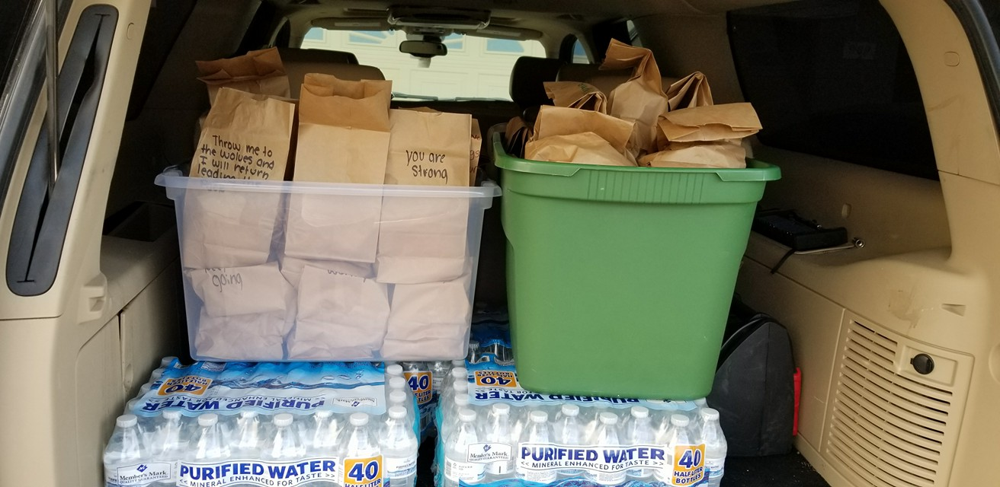
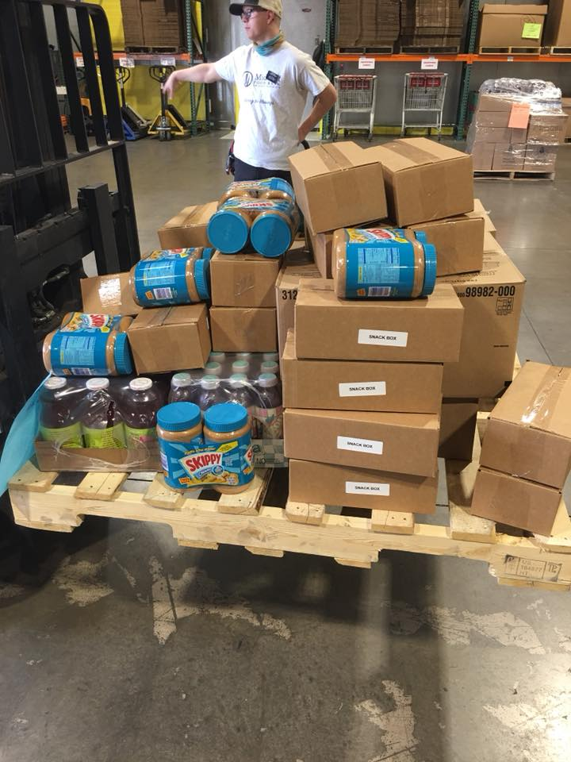

Welcome to AFOH!
 AFOH provides several directories of shelters & housing, food banks & kitchens, as well as directories for local homelessness programs, services, and organizations in the Valley. AFOH performs outreach at various locations in the Phoenix Valley on a daily and weekly basis. Click here for more info about our outreach routes and schedules. AFOH on Facebook is a hub for the Phoenix Valley to connect on homelessness issues, find opportunities for kindness, and for the homeless to access programs they need for shelter and resources
-

Homeless Resources
AFOH provides several directories of shelters & housing, food banks & kitchens, as well as directories for local homelessness programs, services, and organizations in the Valley.
-
Local Outreach
AFOH performs outreach at various locations in the Phoenix Valley on a daily and weekly basis. Click here for more info about our outreach routes and schedules.
-
Social Media Hub
AFOH on Facebook is a hub for the Phoenix Valley to connect on homelessness issues, find opportunities for kindness, and for the homeless to access programs they need for shelter and resources